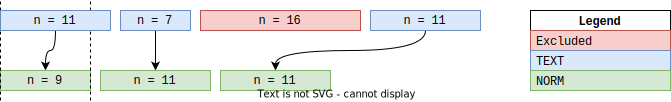

Normalisation[source]
The normalisation scheme used by EDS-NLP adheres to the non-destructive doctrine. In other words,
nlp(text).text == text
is always true.
To achieve this, the input text is never modified. Instead, our normalisation strategy focuses on two axes:
- Only the
NORMandtag_attributes are modified by thenormalizerpipeline component ; - Pipes (e.g.,
pollution) can mark tokens as excluded by setting the extensionToken.tag_toEXCLUDEDor as space by setting the extensionToken.tag_toSPACE. It enables downstream matchers to skip excluded tokens.
The normaliser can act on the input text in five dimensions :
- Move the text to lowercase.
- Remove accents. We use a deterministic approach to avoid modifying the character-length of the text, which helps for RegEx matching.
- Normalize apostrophes and quotation marks, which are often coded using special characters.
- Detect spaces and new lines and mark them as such (to be skipped later)
- Detect tokens in pollutions patterns and mark them as such (to be skipped later)
Note
We recommend you also add an end-of-line classifier to remove excess new line characters (introduced by the PDF layout).
We provide a endlines pipeline component, which requires training an unsupervised model. Refer to the dedicated page for more information.
Usage
The normalisation is handled by the single eds.normalizer pipeline component. The following code snippet is complete, and should run as is.
import edsnlp, edsnlp.pipes as eds
from edsnlp.matchers.utils import get_text
nlp = edsnlp.blank("eds")
nlp.add_pipe(eds.normalizer())
# Notice the special character used for the apostrophe and the quotes
text = "Le patient est admis à l'hôpital le 23 août 2021 pour une douleur ʺaffreuse” à l`estomac."
doc = nlp(text)
get_text(doc, attr="NORM", ignore_excluded=False)
# Out: le patient est admis a l'hopital le 23 aout 2021 pour une douleur "affreuse" a l'estomac.
Utilities
To simplify the use of the normalisation output, we provide the get_text utility function. It computes the textual representation for a Span or Doc object.
Moreover, every span exposes a normalized_variant extension getter, which computes the normalised representation of an entity on the fly.
Configuration
The pipeline component can be configured using the following parameters :
Normalisation pipeline. Modifies the NORM attribute, acting on five dimensions :
lowercase: using the defaultNORMaccents: deterministic and fixed-length normalisation of accents.quotes: deterministic and fixed-length normalisation of quotation marks.spaces: "removal" of spaces tokens (via the tag_ attribute).pollution: "removal" of pollutions (via the tag_ attribute).
Parameters
| PARAMETER | DESCRIPTION |
|---|---|
nlp | The pipeline object. TYPE: |
name | The component name. TYPE: |
lowercase | Whether to remove case. TYPE: |
accents |
TYPE: |
quotes |
TYPE: |
spaces |
TYPE: |
pollution | Optional TYPE: |
Source code in edsnlp/pipes/core/normalizer/factory.py
21 22 23 24 25 26 27 28 29 30 31 32 33 34 35 36 37 38 39 40 41 42 43 44 45 46 47 48 49 50 51 52 53 54 55 56 57 58 59 60 61 62 63 64 65 66 67 68 69 70 71 72 73 74 75 76 77 78 79 80 81 82 83 84 85 86 87 88 89 90 91 92 93 94 95 96 97 98 99 100 101 102 103 104 105 106 107 108 | |
options: only_parameters: true
Pipes
Let's review each subcomponent.
Lowercase
The eds.lowercase pipeline component transforms every token to lowercase. It is not configurable.
Consider the following example :
import edsnlp, edsnlp.pipes as eds
from edsnlp.matchers.utils import get_text
nlp = edsnlp.blank("eds")
nlp.add_pipe(
eds.normalizer(
lowercase=True,
accents=False,
quotes=False,
spaces=False,
pollution=False,
),
)
text = "Pneumopathie à NBNbWbWbNbWbNBNbNbWbW `coronavirus'"
doc = nlp(text)
get_text(doc, attr="NORM", ignore_excluded=False)
# Out: pneumopathie à nbnbwbwbnbwbnbnbnbwbw 'coronavirus'
Accents
The eds.accents pipeline component removes accents. To avoid edge cases, the component uses a specified list of accentuated characters and their unaccented representation, making it more predictable than using a library such as unidecode.
Consider the following example :
import edsnlp, edsnlp.pipes as eds
from edsnlp.matchers.utils import get_text
nlp = edsnlp.blank("eds")
nlp.add_pipe(
eds.normalizer(
lowercase=False,
accents=True,
quotes=False,
spaces=False,
pollution=False,
),
)
text = "Pneumopathie à NBNbWbWbNbWbNBNbNbWbW `coronavirus'"
doc = nlp(text)
get_text(doc, attr="NORM", ignore_excluded=False)
# Out: Pneumopathie a NBNbWbWbNbWbNBNbNbWbW `coronavirus'
Apostrophes and quotation marks
Apostrophes and quotation marks can be encoded using unpredictable special characters. The eds.quotes component transforms every such special character to ' and ", respectively.
Consider the following example :
import edsnlp, edsnlp.pipes as eds
from edsnlp.matchers.utils import get_text
nlp = edsnlp.blank("eds")
nlp.add_pipe(
eds.normalizer(
lowercase=False,
accents=False,
quotes=True,
spaces=False,
pollution=False,
),
)
text = "Pneumopathie à NBNbWbWbNbWbNBNbNbWbW `coronavirus'"
doc = nlp(text)
get_text(doc, attr="NORM", ignore_excluded=False)
# Out: Pneumopathie à NBNbWbWbNbWbNBNbNbWbW 'coronavirus'
Spaces
This is not truly a normalisation component, but this allows us to detect spaces tokens ahead of the other components and encode it as using the tag_ attribute for fast matching.
Tip
This component and its spaces option should be enabled if you ever set ignore_space_tokens parameter token to True in a downstream component.
import edsnlp, edsnlp.pipes as eds
nlp = edsnlp.blank("eds")
nlp.add_pipe(
eds.normalizer(
lowercase=False,
accents=False,
quotes=False,
spaces=True,
pollution=False,
),
)
doc = nlp("Phrase avec des espaces \n et un retour à la ligne")
[t.tag_ for t in doc]
# Out: ['', 'SPACE', '', '', '', 'SPACE', '', '', '', '', '', '']
Pollution
The pollution pipeline component uses a set of regular expressions to detect pollutions (irrelevant non-medical text that hinders text processing). Corresponding tokens are marked as excluded (by setting Token._.excluded to True), enabling the use of the phrase matcher.
Consider the following example :
import edsnlp, edsnlp.pipes as eds
from edsnlp.matchers.utils import get_text
nlp = edsnlp.blank("eds")
nlp.add_pipe(
eds.normalizer(
lowercase=False,
accents=True,
quotes=False,
spaces=False,
pollution=True,
),
)
text = "Pneumopathie à NBNbWbWbNbWbNBNbNbWbW `coronavirus'"
doc = nlp(text)
get_text(doc, attr="NORM", ignore_excluded=False)
# Out: Pneumopathie a NBNbWbWbNbWbNBNbNbWbW `coronavirus'
get_text(doc, attr="TEXT", ignore_excluded=True)
# Out: Pneumopathie à `coronavirus'
This example above shows that the normalisation scheme works on two axes: non-destructive text modification and exclusion of tokens. The two are independent: a matcher can use the NORM attribute but keep excluded tokens, and conversely, match on TEXT while ignoring excluded tokens.

Types of pollution
Pollution can come in various forms in clinical texts. We provide a small set of possible pollutions patterns that can be enabled or disabled as needed.
For instance, if we consider biology tables as pollution, we only need to instantiate the normalizer pipe as follows:
import edsnlp, edsnlp.pipes as eds
nlp = edsnlp.blank("eds")
nlp.add_pipe(
eds.normalizer(
pollution=dict(biology=True),
),
)
| Type | Description | Example | Included by default |
|---|---|---|---|
information | Footnote present in a lot of notes, providing information to the patient about the use of its data | "L'AP-HP collecte vos données administratives à des fins ..." | True |
bars | Barcodes wrongly parsed as text | "...NBNbWbWbNbWbNBNbNbWbW..." | True |
biology | Parsed biology results table. It often contains disease names that often leads to false positives with NER pipes. | "...¦UI/L ¦20 ¦ ¦ ¦20-70 Polyarthrite rhumatoïde Facteur rhumatoide ¦UI/mL ¦ ¦<10 ¦ ¦ ¦ ¦0-14..." | False |
doctors | List of doctor names and specialities, often found in left-side note margins. Also source of potential false positives. | "... Dr ABC - Diabète/Endocrino ..." | True |
web | Webpages URL and email adresses. Also source of potential false positives. | "... www.vascularites.fr ..." | True |
coding | Subsection containing ICD-10 codes along with their description. Also source of potential false positives. | "... (2) E112 + Oeil (2) E113 + Neuro (2) E114 Démence (2) F03 MA (2) F001+G301 DCL G22+G301 Vasc (2) ..." | False |
footer | Footer of new page | "2/2Pat : NOM Prenom le 2020/01/01 IPP 12345678 Intitulé RCP : Urologie HMN le | True |
Custom pollution
If you want to exclude specific patterns, you can provide them as a RegEx (or a list of Regexes). For instance, to consider text between "AAA" and "ZZZ" as pollution you might use:
import edsnlp, edsnlp.pipes as eds
nlp = edsnlp.blank("eds")
nlp.add_pipe(
eds.normalizer(
pollution=dict(custom_pollution=r"AAA.*ZZZ"),
),
)
Authors and citation
The eds.normalizer pipeline component was developed by AP-HP's Data Science team.